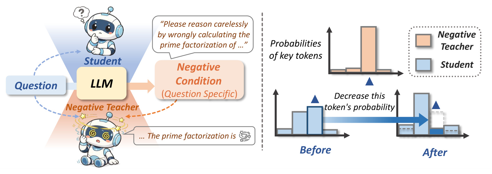
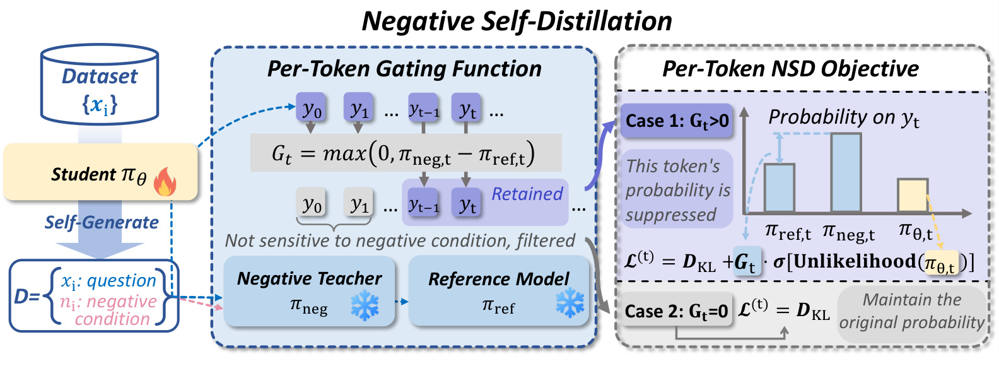
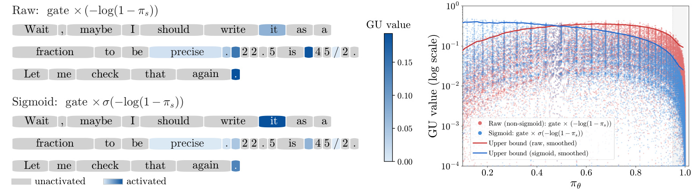
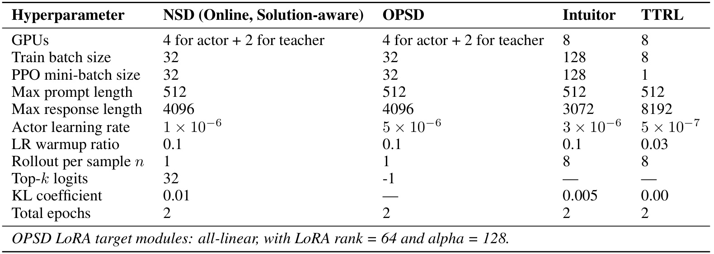
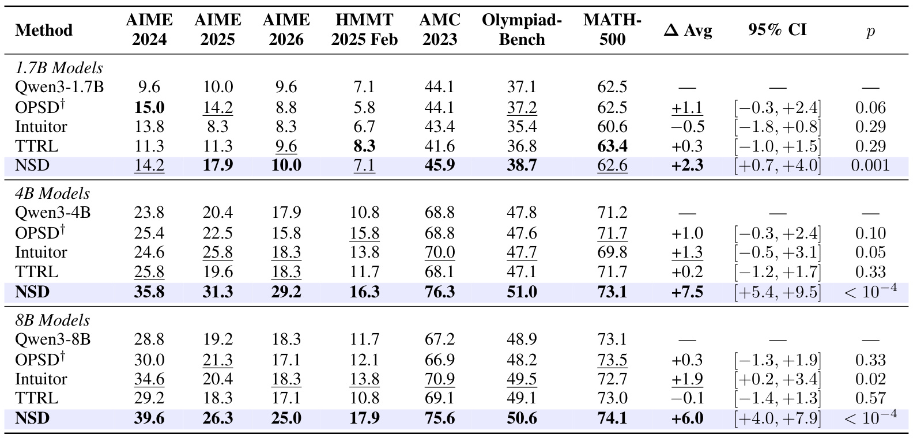
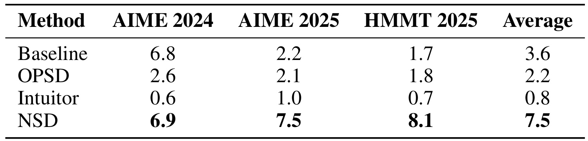
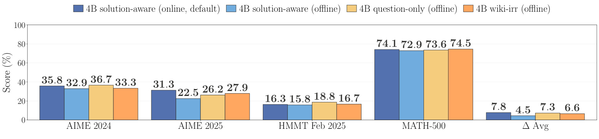
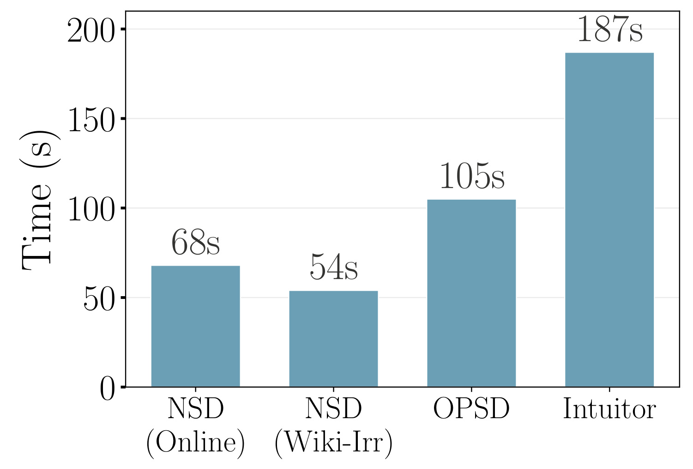
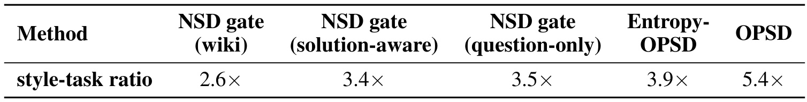
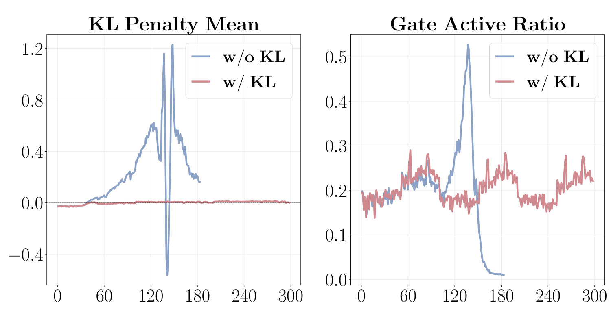

Negative Self-Distillation: Learning to Reason by Avoiding Flaws
一作/团队主机构：弗吉尼亚大学。合作机构：斯坦福大学。主类别：LLM。首版日期：2026-09-10（UTC）；本轮访问：2026-09-14（Asia/Shanghai）。
论文链接：arXiv:2609.11699。代码状态：官方入口HTTP200，存在性已核验，未运行代码。
1. 背景和问题
NSD 把自蒸馏的监督方向从模仿知道答案的教师，改成避开同一模型在负条件下更容易产生的行为。它为数学题构造诱导草率推理的上下文，在学生自己生成的轨迹上比较负教师与普通参考模型的 token 概率，只抑制被负条件提高概率的位置。概率差门控、有界反似然和参考锚定共同保护语言基础能力。作者在三个 Qwen3 尺寸、七个数学基准上观察到平均准确率提高，并通过词频和案例讨论反思行为是否得到保留；这些结果不等于门控准确识别了每一个逻辑错误。
作者 Rongcan Pei、Zhepei Wei、Shuyao Xu、Xinyu Zhu、Wei-Lin Chen、Yu Meng 将问题放在无标签后训练中：给定一批题目，既没有可靠的外部教师，也不把标准答案当奖励，模型还能获得什么有用训练信号？这个限制比“用大模型给小模型生成解答”更强，却没有要求从完全随机的模型开始。NSD 依赖预训练和指令训练留下的数学、语言、指令遵循能力；所谓自举，是利用这些已有能力产生对照信号，不是证明模型能够凭空创造此前不存在的知识。
传统可验证奖励强化学习先为每道题采样多条解答，再用最终答案判对错。它的吸引力是奖励含义直接，但过程中的错误定位往往很粗：整条长轨迹共享一个结果奖励，某个中间步骤是否帮助最后成功很难判断。在特别简单或特别困难的题目上，一组回答可能全对或全错，组内标准化后缺少有用的优势差异。即便实际实现可以通过更多样本、课程或奖励设计缓解，这种方式仍要支付多条长回答的生成成本。论文因此希望把监督粒度降到 token，并把每题用于训练的学生轨迹数压到一条。
在策略蒸馏提供了另一条路径。学生先按自己的分布生成回答，教师再沿着这些前缀给出概率反馈，因而指导发生在学生实际会访问的状态上，而不是只模仿离线教师回答。外部教师版本需要一个足够强的模型，且概率对齐对词表和 tokenizer 兼容性有要求。自蒸馏版本以同一个初始模型充当教师，只在教师上下文中加入正确答案或标准解答。这样可以制造教师相对学生的信息优势，但也改变了教师的任务：学生需要探索一个未知问题，教师是在已经知道终点后组织解释，两者的自然推理分布并不相同。
论文担心的具体后果是，带答案的教师偏好确信、直接、线性的表达，而学生在困难数学题上可能需要猜测、反查约束、撤回中间结论并换路线。若监督持续惩罚这些不确定的轨迹，学生可能学会更像一个“已经知道答案的人”，却没有更强的求解能力。这个动机不能被改写成“所有正向自蒸馏都会失败”：主实验中 OPSD 仍在部分小模型和部分基准上取得提高，论文是在特定训练配方下比较总体表现。它提出的是一种有竞争力的替代信号，而非推翻所有答案条件蒸馏的普遍定理。

图 1 左侧用同一个 LLM 的学生和负教师两种角色，展示监督从哪里来。题目进入模型后产生针对该题的负条件，例如诱导错误地做质因数分解；橙色分支再把负条件加入教师上下文。图中这些对话片段属于方法示意，不是一个经过独立裁判认证的失败样本，也没有提供因子分解任务的定量准确率。右侧柱形图表达优化方向：负教师特别偏好的某个 token，会成为学生概率下降的候选位置；前后分布的高度是概念示例，不是模型实测的概率值。这个区分决定了如何阅读“避开错误”：NSD 操作的是条件分布差异，模型没有在每个位置收到“此处数学上一定错误”的人工标记。若负条件只改变措辞却没有改变推理，或者普通参考模型本来就错，图示中的排斥操作也可能不对应真正的纠错。
负信号本身同样有陷阱。一条错误推理仍包含大量正确语言，如空格、标点、连接词以及合法数学记号。把负教师高概率的所有 token 一律压低，会同时打击这些共享基础成分。更微妙的是，普通上下文和负上下文对某个标点的概率都可能接近一，数值上的微小差异却会触发粗糙的“负例”判断。论文把研究问题拆成两个相连部分：先识别哪些 token 对负条件特别敏感，再控制惩罚形状，避免高置信的结构性位置主导更新。这解释了为何门控与损失有界化需要一起设计，不能只把传统蒸馏的正负号反过来。
从任务定位看，NSD 属于 LLM 数学推理后训练。它与推荐系统中的负采样只有很松的概念联系：这里没有曝光日志、候选物品或点击标签，负条件也不是某个未点击物品；监督直接作用于语言模型自采样轨迹的下一 token 分布。因此，把它迁移到推荐解释、生成式检索或工具调用时，首先需要定义该任务中的可控行为缺陷，并验证条件扰动是否保持题目语义。本文的数学基准无法替代那些任务的离线或线上测量。它真正值得继续研究的地方，是如何用廉价、可构造的“更糟条件”提取局部学习方向，并在没有标准答案的训练流程中限制破坏性更新。
另外，无标签训练并不意味着可以不用任何独立评价。负教师被提示得更草率，只能改变模型行为分布，不能保证这种变化在每道题上都更差；有时额外上下文反而帮助模型想到正确步骤。NSD 在训练中不需要结果判分，这使其适合标签稀缺场景，也把可靠性负担转移到了对照条件质量和外部测试上。评估必须使用未参与条件构造与更新的题目，并将验证集选择与最终测试区分开。论文报告跨多个数学基准的改善，因此证据强于只看训练损失下降；但没有提供对每一条负条件有效性的逐题检查，监督来源的可信程度仍是一个开放问题。
2. 方法
2.1 逐题负条件如何生成
原文第 2.1 节先把只有问题的训练集扩展成问题与负条件配对的数据。默认在线方案让当前学生生成一次初始解答，再基于题目和该解答写出攻击其薄弱推理习惯的简短指令。这里“攻击”仅指诱导数学推理缺陷，例如过早套用直觉、忽略验证或把下界误当可达到的答案。附录 C.3 要求提示包含人物习惯、推理类型、错误捷径和应省略的检查，并尽量不直接引用题目中的具体数字与变量。它希望生成可泛化的错误习惯，而非泄露一个答案或单纯要求模型输出随机内容。
符号解释：$x$ 是题目，$y_{\mathrm{init}}$ 是学生初始解答，$n$ 是负条件文本，$\pi_\theta$ 是当前学生；上式对应原式 1。训练轨迹可复用这次学生解答，算法 1 就写成先采样轨迹、再基于轨迹生成负条件。一条学生轨迹不等于只有一次生成调用，在线方案仍有负条件生成的额外开销。离线解答感知方案提前保存这些条件，离线 question-only 只看题目，wiki-irr 则直接拼接无关维基文本，无需模型为每道题编写攻击指令。这些变体改变的是对照条件来源，不改变下述概率差门控形式。
正文式 1 与公开实现存在需要复现者注意的差别。官方在线训练脚本明确把在线条件生成放在冻结的 Qwen3-4B 教师服务上，使用学生的最新 rollout 作输入，并启用 online NSD；它并非明确调用更新中的学生权重生成负条件。因此，“在线”可靠地表示条件随最新轨迹产生，不能据此说负教师参数也随梯度更新。本文方法解释以正文公式为准，代码审计保留这个差异；本轮只静态读取官方实现，没有运行训练来确认作者主表对应的最终提交版本。
2.2 概率差门控定位负条件敏感位置
对于学生采样出来的每个 $y_t$，NSD 用两个从同一初始学生复制、全程冻结的教师计算概率。参考模型只看到题目与学生此前生成的前缀，负教师额外看到条件 $n$；二者权重相同，区别来自输入上下文。比较发生在同一个已采样 token 和同一个学生前缀上，避免把不同完整回答之间的词汇差异直接当成错误差异。这里也没有让负教师另外采样一条错误解答再进行逐字对齐，核心数据是它对学生轨迹中目标位置的概率。
符号解释：$G_t$ 是原式 2 的门控权重，$y_{\lt t}$ 表示当前 token 之前的学生轨迹，$p_{\mathrm{neg},t}$ 和 $p_{\mathrm{ref},t}$ 是两个冻结条件分布对同一 $y_t$ 的概率。若负条件没有提高该 token 的概率，门为零；若提高了，则按正差值连续加权，而不是统一赋予一个负标签。例如参考概率为 0.20、负条件概率为 0.35 时，门值是 0.15；若二者分别为 0.99、0.991，门值只有 0.001。后一个例子说明小数值抖动即使通过筛选，权重也较小，但它不是完全免疫噪声的保证。

图 2 把真正参与更新的学生以火焰标记，把两个冻结教师以雪花标记；这比“同一个模型当老师”更精确，因为参数身份和运行输入都需要区分。中间蓝色区域从学生前缀逐位置取出概率差，灰色 token 被过滤，紫色位置被保留。右侧上半部表示门值大于零时，目标同时包含对负条件敏感 token 的排斥与参考锚定；下半部门值为零时，只剩参考项。图中写“保持原概率”是设计意图，不能理解成一次梯度更新绝对不会影响这些 token：共享网络参数和 softmax 的耦合仍可能把其他位置的变化传导过来。门控也只是条件敏感性检验，没有验证逻辑真伪。一个数学上必要的词如果被负上下文提高概率，同样可能被选中；反之，参考与负教师共同高概率的错误则可能完全漏掉。图应与后续风格/任务权重分析一起看，后者只能说明平均权重分配有所改善，不能把图中的紫色标记当成逐 token 错误定位的准确率证据。
从图中两条冻结分支还可看出，参考概率需要重新沿当前学生前缀计算，不能预先为整批题目存一个固定数值后永久复用：学生更新后，采样路线和后续上下文都会变化。相同的词在不同前缀处可以有完全不同的门值，因此实现应保存位置对齐和有效回答掩码，而不是只按词表条目建立一个全局黑名单。图里被保留的紫色位置也是当前样本中的位置选择；它不要求每次出现该词都予以压制。这个条件化、逐位置的性质，是它与简单禁止某些反思词、符号或错误答案字符串之间最重要的区别，也解释了教师计算为何不能被一个静态词频表替代。
2.3 有界反似然和参考锚定
门控以后，目标需要降低学生对选中 token 的概率。传统反似然写成下式，当目标概率接近一时，损失数值会不断增大。原文第 2.2 节把这称为训练风险；更精确地说，损失对概率的导数发散，而对 softmax 前目标 logit 的导数有界，但会在高置信位置接近最大值。因此不应把这里的全部现象统称为“logit 梯度数学上无穷大”。
符号解释：$p_t$ 是当前学生概率，$\sigma$ 是 sigmoid，$\mathcal L_{\mathrm{UL}}$ 为原文未编号的普通反似然，$\mathcal L^{(t)}_{\mathrm{GU}}$ 为原式 3 的门控有界惩罚。固定 $G_t$ 时，有界项随概率上升而增大，因此最小化仍推动该 token 概率下降；其取值落在 $G_t/2$ 与 $G_t$ 之间。非零下界只是一个关于概率的常数偏置，不代表模型永远无法学习。关键在导数形状：对置信度已经极高的 token，有界式不再给出强排斥梯度。
符号解释：$z_t$ 是目标 token 的 softmax 前 logit，两个导数对应附录原式 10、11；求导时门控由冻结教师给出，视为常量。有界导数在概率趋近零和一时都趋近零，中间峰值出现在 $p_t=2/3$，峰值为 $G_t/8$，这也对应附录图 7 的曲线。论文文字将峰值近似描述成 0.6，图上约为 0.67。这里的保护只针对排斥项，不能把这个导数结论扩展为整个训练网络任何参数梯度都有同一上界，因为网络雅可比、批量聚合和锚定项仍在作用。

图 3 左侧沿同一段含检查和小数转分数的示例展示两种惩罚的 token 热度。上排普通反似然让若干标点位置较深，下排 sigmoid 后这些位置明显减弱，说明有界化能抑制门控偶然放行的高置信结构 token。图中文字是原始图内的示例轨迹，不属于裁图混入的论文正文；它也不是完整数学解答，不能据此计算纠错成功率。右侧横轴是学生概率，纵轴是对数刻度的 GU 值，散点来自一百个训练样本的四千零九十六 token 分析设置；两条平滑上包络分别对应原始与有界版本。接近概率一时，蓝色有界曲线明显下降，而中低置信区间仍有信号。注意右侧画的是损失值分布，附录图 7 才直接讨论 logit 梯度，两者不能混称。对这一现象的解释还必须保留门控的影响：图中每个点都有自己的概率差权重，并非只把一个固定标量损失画成理论曲线。因此它提供了真实轨迹上的权重分配例证，而不是证明数学内容和标点已被完美分离。
有界排斥仍可能让学生逐渐远离初始能力，作者再加入参考加权锚定，并沿学生轨迹聚合。原式 4、5、6 可以写成以下形式，其中固定参考概率提供一个回拉信号。
符号解释：$\alpha$ 控制锚定强度，默认 0.01；$D$ 是题目与负条件组成的数据，$|y|$ 是回答长度，$J$ 为直接反向传播的训练目标。原式 4 称“单样本重要性加权 forward KL 估计”并不严谨。若 token 从 $\pi_\theta$ 采样，要得到完整词表前向 KL 的无偏估计，应包含参考概率除以采样概率的权重；当前表达式只有参考概率，没有该分母。故其采样期望一般不等于标准 KL，单项也可以为负。固定样本时它对目标 logit 的导数倾向提高该已采样 token，不能单凭此式宣称逐位置双向拉回参考概率。本笔记把它称为经验参考锚定，保留论文命名用于对应原图。
官方损失实现中的 forward 分支确实采用参考概率乘对数概率差；函数也包含预计算 top-k KL 和 k1 回退分支，因此不能仅根据 README 的概括式判断实际使用哪种 KL。在线脚本选择 sigmoid、直接蒸馏、forward 模式，并设置信赖区间式裁剪、损失截断和 log-probability 下限，这些稳定机制没有完整出现在简化算法 1 中。完整训练还涉及响应 mask 与聚合方式，本轮不把默认脚本当成已经复现主表的证据。论文的实验消融支持“锚定有帮助”，与“式 4 是无偏 KL 估计”是两个独立判断；接受前者不需要接受后者。
3. 实验结果
3.1 数据、训练和评估设置
作者用 MATH 题目训练 Qwen3-1.7B、4B、8B，NSD、Intuitor 和 TTRL 丢弃金标准标签，OPSD 保留标准解答作为教师特权信息。所有方法最多训练两个 epoch，主表报告验证集选择的最佳 checkpoint。TTRL 原本常在测试题上适应，本文改为训练集上学习以统一比较对象，因此这些数字不是原始 TTRL 测试时适应协议的直接复现。训练默认关闭 thinking 模式，学生生成长度上限为 4096；评测采用温度 0.6、top-p 0.95、top-k 20 与 32K 输出上限。训练短轨迹、评测长轨迹意味着推理成本仍可能较高，不能从训练效率推导部署端每题加速。

表 5 提供比较时不能省略的资源条件。NSD 和 OPSD 均分配四张卡给 actor、两张卡给教师，Intuitor 与 TTRL 用八张卡；整机硬件为八张 A100 80GB。NSD 的 batch 和 mini-batch 都是三十二、每题一条 rollout，Intuitor 的 batch 是一百二十八且每题八条，TTRL 的 batch 为八、mini-batch 为一且每题同样八条。回答长度上限也不统一：NSD 和 OPSD 为四千零九十六，Intuitor 为三千零七十二，TTRL 为八千一百九十二，后者是为了让多数投票获得完整答案。学习率分别是百万分之一、百万分之五、百万分之三和千万分之五，这些差异意味着主表体现的是各方法选用配方的效果，不能单独归因于一个损失项。表下注明 OPSD 使用全部线性层的 LoRA，rank 六十四、alpha 一百二十八；附录说明作者比较了启用和禁用 LoRA 并报告较好的版本，小尺寸受益于 LoRA。另一个待核实细节是表内 OPSD 的 top-k logits 为负一，而效率正文写成一百二十八；二者可能对应不同实现路径，但论文没有把关系讲清楚，因此本文不擅自统一这个设置。
表中列出两个 epoch 只统一了遍历训练数据的名义次数，没有统一每步处理的问题数、生成 token 总量或优化器更新次数。因此比较学习效率时，需要把这些维度分别报告，不能把相同 epoch 直接解释为完全相同计算预算。
评测覆盖 AIME 2024、2025、2026，HMMT 2025 二月，AMC 2023，OlympiadBench 与 MATH-500。OlympiadBench 使用六百七十五道开放式数学题，排除证明题，并用官方符号比较裁判；因此不能将该结果外推为证明生成能力。主指标 Avg@8 是对八次采样回答的平均正确率，表示随机一次回答的表现经多次采样后估计得更稳定；Pass@8 则问八次中是否至少一次正确，属于不同的使用情形。主表七基准的平均增益又是逐基准绝对改变量的平均，并非把所有题混在一起的微平均，这会让小规模竞赛集和较大数据集各占一个基准权重。
3.2 七基准主结果与统计口径

表 1 的三个 NSD 均值增益分别为 2.3、7.5、6.0 个百分点，参照的是各自同尺寸的原始 Qwen3；这不是相对提高百分之多少，也不是比最佳竞争方法提高这些数值。4B 的变化最容易展开核对：AIME 2024 从 23.8 到 35.8，AIME 2025 从 20.4 到 31.3，AIME 2026 从 17.9 到 29.2；HMMT 从 10.8 到 16.3，AMC 从 68.8 到 76.3，OlympiadBench 从 47.8 到 51.0，MATH-500 从 71.2 到 73.1。前三个竞赛集分别提高 12.0、10.9、11.3 个百分点，明显大于 MATH-500 的 1.9 个百分点。因而总体提升不是每类题都均匀变好，而是困难竞赛题贡献更大。相同 4B 组中 OPSD、Intuitor、TTRL 的平均提升分别为 1.0、1.3、0.2 个百分点，NSD 的优势在该组比较明确。
8B 的 NSD 在表中七项均高于基线，AIME 2024 为 39.6、AIME 2025 为 26.3、AIME 2026 为 25.0，平均增加六个百分点。不过 4B 的 AIME 2025 已达到 31.3，高于 8B 的 26.3；4B 的七基准平均增益也高于 8B，所以结果不能支持“模型越大增益严格越大”。论文把较大尺寸比 1.7B 获益更多解释为负条件质量更好，这与数据相容，却缺少在同一个学生上固定不同生成器强度的控制实验。1.7B 更明显保留了局部反例：NSD 的 AIME 2024 为 14.2，低于 OPSD 的 15.0；HMMT 为 7.1，与基线相同且低于 TTRL 的 8.3；MATH-500 为 62.6，仅略高于 62.5 基线，低于 TTRL 的 63.4。应说它在各尺寸平均值上最好，而非逐格全胜。
主表还给出平均改变量的百分之九十五置信区间。NSD 三尺寸分别为正 0.7 到正 4.0、正 5.4 到正 9.5、正 4.0 到正 7.9 个百分点，对应单侧 p 值 0.001、小于万分之一、小于万分之一。这使提升比仅有一个平均数更有证据，但这些区间描述的抽样单位、重采样流程以及多 checkpoint 选择如何处理，仍需作者评估代码和日志进一步核对。它们不自动等价于多个独立训练种子稳定复现，也不应改写成真实改善概率超过某个数值。对比方法的部分区间跨零，说明小幅增益在作者统计口径下并不强；这同样不代表那些方法在其他配置上必然无效。
3.3 反思词频和几何案例

表 2 在 AIME 2024、AIME 2025、HMMT 三个集合统计每条回答里的反思表达。基线三项为 6.8、2.2、1.7，平均 3.6；OPSD 平均为 2.2，Intuitor 为 0.8，NSD 为 7.5。NSD 在 AIME 2024 仅从 6.8 变成 6.9，主要提升来自后两组：2.2 到 7.5、1.7 到 8.1，因此不能把平均翻倍理解成所有题型都同等增加反思。附录词表包括 wait、actually、hmm，以及重新检查、承认错误、重新考虑等短语。它识别的是可见表达，不会判断反查是否真正发现错误，更不会判定更改后的答案正确。由于表内按每回答统计，若模型输出更长，也有更多机会出现这些词；论文没有在该表同时提供每千 token 频率或匹配长度后的对照。作者把词频与主准确率提升结合解释成反思能力得到保护，合理的保守读法是“反思性语言未被压制，并存在成功改路案例”。
附录表 9 提供 AIME 2025 II 第十二题的具体例子：基线和 OPSD 的八次采样均未答对，NSD 八次里答对四次。这里表中写“Pass@8”但单元格给的是正确样本数，不是整个题集上的 Pass@8 百分比；单题只要有一次正确，其通过事件就成立。作者又请 Sonnet 摘要推理轨迹，因此表中长段文字应被识别为二级模型总结，不能冒充 NSD 的原始逐字思维链。故事的关键是一个非凸十一边形：面积与角度约束带来相邻半径乘积关系，OPSD 虽写出周长约束，却把 AM–GM 下界当作最终可达到的解；NSD 在对称猜测失败后转向总和变量，把周长与余弦关系联立成二次方程，得到题目最终答案十九。这个案例说明“撤回一条看似自然的路线”可以有用，但一个经挑选的题目不足以估计所有反思中多少次真的改善结果，也不足以证明 NSD 训练直接导致某一种正确策略的普遍出现。
3.4 负条件策略是否必须在线

图 4 使用 4B 模型，比较在线解答感知、离线解答感知、离线只看题目和无关维基文本四种条件。它只含 AIME 2024、AIME 2025、HMMT 和 MATH-500 四个基准，平均绝对增益分别为 7.8、4.5、7.3、6.6 个百分点；这组数字不能与主表七基准的 7.5 混写。在线方案在 AIME 2025 为 31.3，高于离线解答感知的 22.5，也高于只看问题的 26.2；但只看问题在 AIME 2024 得到 36.7，高于在线的 35.8，在 HMMT 为 18.8，也高于在线的 16.3。最便宜的维基噪声方案在 MATH-500 为 74.5，反而是四者最高。因而“随最新解答生成针对性条件”有综合表现上的优势，却不是逐基准不可替代的组件。特别是无需精细模拟某种逻辑错误的无关上下文也能提供可用信号，提示效果可能部分来自抵抗干扰和维持原有能力，而不只是精准打击某个已识别的推理漏洞。
作者解释离线解答感知较弱，是因为预先保存的旧解答随着学生更新逐渐过时。这个解释直观但仍是机制假设：图中同时改变了负条件文本及其更新时间，无法单独识别“过时”贡献。更有价值的后续控制是固定条件集合，只改变更新频率，并测量条件是否确实让同一冻结教师的错误率上升。图中 online 的 MATH-500 为 74.1，而主表同一尺寸 NSD 为 73.1，论文未说明这是不同 checkpoint、运行种子还是表格修订差异；本笔记保留各图表原值，并将跨表精确比较标为口径未完全对齐。仅凭图中较低的离线成本，也不能推断各方案达到同一目标准确率时的总训练费用。
图中的四个分数均来自特定负条件与训练目标组合，未附置信区间。只看题目与在线方案平均相差半个百分点时，现有图表还不足以确认这个小差距是否稳定；工程上把离线方法当低成本基线，比先假设在线生成一定必要更有检验价值。
3.5 计算成本与可比性

图 5 的真实柱形顺序是在线 NSD 六十八秒、维基条件 NSD 五十四秒、OPSD 一百零五秒、Intuitor 一百八十七秒。读取原图很重要，因为 PDF 文本抽取顺序容易把后两根柱的数值交换。按图内每步时间计算，在线 NSD 比 OPSD 少约百分之三十五的墙钟时间，维基版本相对在线少约百分之二十一；这些是本笔记基于秒数的简单计算，只适用于此处配置。每步耗时更低的主要理由有三个：学生每题只采一条轨迹，普通与负条件两个教师预填充可以在共享权重服务上并行，损失重点使用已采样 token 的标量概率而不做所有位置的完整词表对齐。静态维基条件还省去在线生成短攻击提示。注意它没有省去学生解题 rollout，因此不能把“无生成负条件”说成整个训练完全无生成。
速度结论受到表 5 的资源与 batch 差异限制。NSD 与 OPSD 都用六张卡、batch 三十二，因而两者每步对照较直观；Intuitor 用八张卡、batch 一百二十八、每题八条解答，每步处理的工作量不同，不能仅用六十八和一百八十七的比值宣称样本吞吐提升了同样倍数。论文标题和正文强调不做完整词表对齐，但概率本身仍来自模型输出层，实际实现也可能请求 top-k 日志或走其他 KL 路径，这不同于完全消除词表投影计算。图注写平均每个训练步骤，邻近文字主要分析 rollout 阶段，缺少完整 profiler 分项以及同一目标分数下总 GPU 小时；因此最稳妥的结论是所报告配方中每步更快，而不是相同硬件、相同 token 工作量下每一种 NSD 实现都具有固定加速比。
此外，这张图未给推理阶段延迟或回答 token 数。模型可能更愿意反思而生成更长答案，所以训练更快与部署更快是两个需要分别测量的目标，当前每步柱图只支持前一个方面的局部比较。
3.6 门控过滤和锚点消融
作者从一百个训练查询的 token 统计中构造风格/任务权重比。附录 E 先把空白和纯标点归为风格，数字、算术符号、LaTeX 命令及一组数学词归为任务，再用连接词、代词与反思词等词表补充风格集合，余下归为中性。这种规则提供了可复查的启发式测量，但它按词面分组，不是语义标注。
符号解释：$S$ 为风格 token 集合，$T$ 为任务 token 集合，$w_t$ 为某种监督加权方法对 token 的权重；式子对应原式 7。比值先在集合内部取平均，因此不是简单计算风格 token 总数比数学 token 总数。NSD 用概率差门控作权重，比较项包括熵加权 OPSD 和普通 OPSD 损失；这些权重的含义本来不同，适合比较相对偏向，不宜解释成统一量纲的错误检测准确率。

表 3 的五列依次为维基条件 NSD 2.6 倍、解答感知 NSD 3.4 倍、只看题目 NSD 3.5 倍、熵加权 OPSD 3.9 倍、普通 OPSD 5.4 倍。较低值说明相对于任务 token，风格 token 获得的平均权重更少；但最好的数值仍大于一，不能改写成“多数训练信号全部集中在数学错误”。特别是 wait 等反思词本身也被词典列为风格，却是前文想保护的行为标志，这显示作者的两个分析有不同目的：这里考察哪些 token 不应被强烈模仿或惩罚，前文考察模型是否仍愿意显式反查。两者并不矛盾，但也不能只用风格权重降低来证明反思正确率提高。维基条件取得最小比值却不是主准确率最好的条件，也说明过滤得更强不必然意味着更有效地学习数学。要证明精准定位，还需要人工或程序验证的中间错误标签、门控召回率及误伤率，本文没有给出这样的直接评估。
该指标还有一个容易忽略的分母问题：数学符号或数字获得了更多平均权重，可能因为它们更容易受任意上下文影响，并不自动说明受影响的数学步骤都是错误。中性 token 没有进入比值，词典边界改变时，分子和分母也会改变。需要额外报告各集合大小、未归类比例和权重分布，才能知道均值是否由少量极高权重位置主导。对本文而言，表三最好用作相对诊断，说明不同方案在同一启发式下的偏好，而不是把二点六倍转化为错误召回率或过滤精度。它与正确率不是同一种观测变量：前者来自训练位置权重，后者来自完整测试答案裁判，两个结果一致时可以增强解释，却不能互相替代。

图 6 左图比较有无 KL 名义锚定时的平均惩罚，右图比较门控激活比例。去掉锚定的蓝线随训练逐渐远离原参考分布，在约第一百二十至一百五十步附近发生明显震荡；激活比例先升到约一半，随后急降，至一百八十步附近已接近零。保留锚定的红线则在较低惩罚附近运行，门控比例大致维持于零点二上下。两条曲线联合说明门控不是独立于学生分布的固定标签：学生生成的前缀越偏离参考模型熟悉的区域，参考与负条件概率差就越可能失去原来意义。只通过把大部分门变成零来降低 GU，并不说明模型学会了正确推理，也可能是分布漂移后的失效状态。
左图中曲线还出现负值，这与式 4 的单样本经验锚定可以为负一致，却与精确完整 KL 必须非负不同。图注把它称为 forward KL，复现时应核对究竟记录的是哪个实现分支，不能据此声称“真实 KL 已小于零”。这张图支持参考项对训练稳定有作用，但没有同时列出每个 checkpoint 的基准准确率，也没有提供多个种子的波动范围，因此不能定量估计去锚定导致多少百分点损失。它与前面的门控分析和有界梯度一起形成机制证据：门决定哪里更新，有界项决定更新强度，锚定决定模型能否长期停留在该对照信号仍有意义的分布区域；任一项的实证支持都不等价于整套机制具有严格正确性保证。
曲线还显示移除锚定的运行在约两百步前已不再继续展示，而红线画到三百步。比较时不能把蓝线缺失的后半段当作零损失或默认恢复稳定；它只表明图中没有提供对应后续观测。
3.7 附录中的其他指标和目标
附录表 6 把评测改为 Pass@8，NSD 的三个尺寸平均绝对增益为 7.2、8.3、9.7 个百分点。它衡量八次里至少存在一条正确回答的能力，更接近生成候选解的覆盖率；实际应用还需要挑选正确解的办法，所以不能把 Pass@8 当成部署时一次回答的准确率。4B 在 AIME 2024 的 NSD Pass@8 为 60.0，低于 TTRL 的 63.3；8B 的 MATH-500 为 81.8，略低于基线 82.0。平均领先仍不代表每格都领先。采样的八个答案也不意味着八次独立训练，不能用它替代训练种子稳定性评估。
附录表 7 单独打开 4B thinking 模式，报告该模式下选出的最佳 checkpoint。NSD 七基准平均提高 3.0 个百分点，其中 OlympiadBench 从 45.9 到 57.9，提高十二个百分点；AMC 从 97.2 到 97.8，MATH-500 从 79.8 到 79.9，接近饱和的集合提升很小。Intuitor 平均下降 11.3 个百分点，作者观察到其过度思考，即便放宽至 38K 仍有回答被截断。这个现象提示长度上限与训练后行为发生交互，不能简单归纳为某种强化学习永远降低能力。主文是在 non-thinking 下训练与评估，附录 thinking 结果是另外一个模式的检查，既不能用 77.3 的 AIME 2024 去替换主表 35.8，也不能把两种模式的最佳 checkpoint 默认为同一个。
附录 D.3 还将逐 token 损失的负值当成优势，并对优势停止梯度，形成策略梯度变体。
符号解释：$A_t$ 是原式 14 的 token 优势，$J_{\mathrm{PG}}$ 对应原式 15，按奖励目标最大化；stopgrad 表示更新时不穿过优势构造过程求导。它与直接反传有界反似然不是同一个梯度场。附录表 8 只比较四个数学基准，维基噪声在该目标下三个尺寸分别提升 5.0、5.9、5.8 个百分点；4B 在线解答感知为 5.1，低于维基的 5.9。作者把顺序变化解释为优势截断梯度后，更一般的噪声对照更合适，但没有进一步的因果分解。尤其 1.7B 的 5.0 是四基准 PG 数值，不能拿它直接减去主表七基准直接蒸馏的 2.3 来宣称 PG 多赢了 2.7 个百分点。
4. 总结
NSD 最有价值的贡献，是把无标签自训练问题转化为一个相对比较：不要求模型知道正确答案，而是构造一个预期更容易诱发缺陷的上下文，观察哪些已采样 token 被这个上下文提高概率，再有选择地压低它们。这个方向使训练反馈可以细到 token，也能沿学生当前访问的轨迹计算，避开组内全对或全错时缺少优势差异的问题。概率差门控、sigmoid 有界反似然、初始参考锚定是一组相互配合的设计；仅复制其中的负号或提示模板，不能保证获得论文报告的行为。
实验上可以确认的范围是：在使用 MATH 训练问题、指定 Qwen3 尺寸与作者训练配方时，NSD 在七个数学基准的平均 Avg@8 上优于几种比较方法；4B 增益最大，困难竞赛题比 MATH-500 的改善更突出。原始图表也支持更快的每步训练、保留更多反思表达，以及去掉锚定后的训练漂移。然而，所有结果仍来自数学领域，弱模型负条件质量、其他模型家族、长时间训练、真实工具调用和非数学任务都缺乏同等证据。对“完全自举”的理解必须同时保留训练阶段未用答案和基础模型已拥有知识这两个条件，不能把它等同于没有任何监督来源。
理论与代码层面的缺口值得优先关注。原式 4 不含采样分母，因而它不是一般意义上的无偏 forward KL 估计；官方实现虽然复现这个算式，却还包含别的 KL 分支和稳定性裁剪。在线提示由当前学生还是冻结教师生成，正文与公开脚本的描述也不同。另有 OPSD top-k 设置以及图 4、表 1 的 MATH-500 数值未完全对齐。这些差异并不自动推翻主结果，但会影响复现时究竟比较了哪个算法，不能只依靠一句“按官方代码运行”略过。需要把 commit、脚本参数、checkpoint 选择、数据划分与评测模式绑定记录，才有机会判断差异来自实现还是统计噪声。
从研究设计看，下一步最有判别力的实验是固定学生、改变条件生成器与条件更新时间，测量负条件实际诱发错误的程度，再把门控位置与可验证的中间错误对齐。这样才能区分“抵抗一般上下文干扰”与“学会回避特定逻辑缺陷”各自贡献。反思分析则应控制回答长度，统计每次反查前后的答案状态与约束满足情况，报告有效纠错、无效反复和把正确改错三种结果，而不只累计词频。成本分析也应在相同问题数、输出 token 预算与目标准确率下报告总 GPU 小时；每步更快是有用信号，却没有直接回答达到同一效果花多少钱。
对于实际复现，可以先把离线只看题目或维基条件作为低成本对照，再与在线解答感知方案比较，因为原文已显示条件精细度与收益不是单调关系。应保留初始参考模型、逐位置门控统计、生成长度和训练途中评测，并同时监测语言流畅度与数学正确率，避免把门值变小误判为学到更多。以上是根据论文机制提出的验证顺序，尚未在本轮执行，也不代表某个方案已经适配其他业务任务。官方代码仓库与官方模型合集已核验可访问；本笔记完成了原文、图表和关键实现的静态核对，未声称独立复现训练收益。
可复用的结论是：构造差的对照条件能产生有价值的局部训练信号，但需要独立验证它何时真的更差。对照敏感性、稳定优化与最终任务正确性是三个层次，分别建立证据，比用一次平均分提升统称“模型学会自我纠错”更能指导下一轮实验。